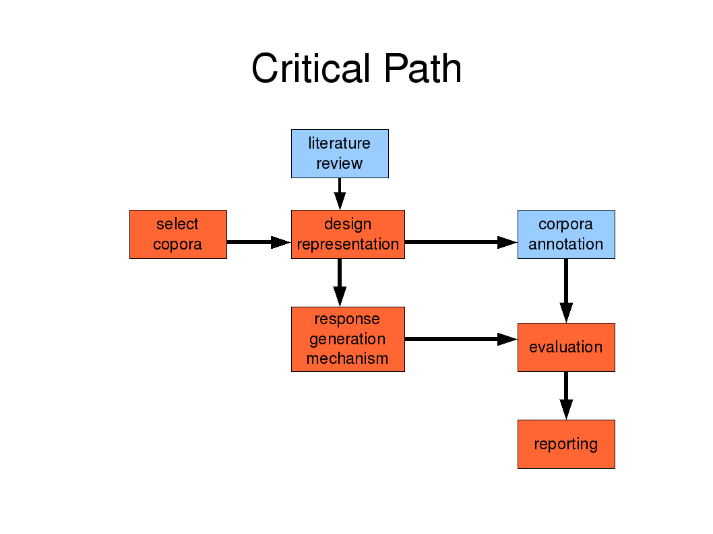
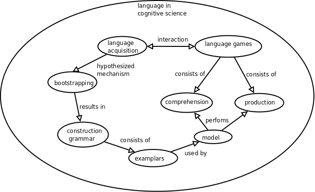
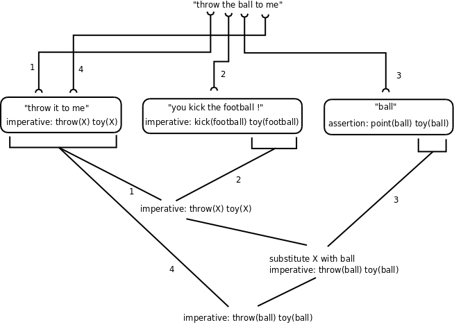

Simulating Language Games of the Two Word Stage
Bachelor AI project 2009, Andreas van Cranenburgh, 0440949
- thesis (final version)
- slides (final version)
- code (python), corpus of exemplars
- API documentation (also includes syntax highlighted source code for browser perusal)
- web interface to model
- baproj@unstable.nl (chatbot on jabber / google talk)
- Project proposal
- Presentation of project proposal
- Project planning
- Abstract
An exemplar-based model of language acquisition is presented, based on a minimalist meaning representation. The model demonstrates that semantics and pragmatics in combination with unification and substitution mechanisms for recombination can account for both comprehension and production in the two word stage, as well as mimicking the discrepancy in performance between language comprehension and production of children in that stage. The model is evaluated by comparing its reaction to data from the Childes corpus, as well as by demonstrating the interpretation of novel utterances. Results seem to indicate that sensible utterances can be interpreted correctly, whereas non-sensible utterance get rejected as interpretation fails.
Sample output:
Parent: what does a duckie say ? 'what does a ?' in '+^ what does a bunny do ?' meaning initialized as: whquestion: do(X) animal(bunny) substituted (bunny) with (duck) 'duckie' in 'duckie .' and 'assertion: animal(duck)' matches 'whquestion: do(X) animal(bunny)' 'say' in 'what does a lion say ?' and 'whquestion: do(X) animal(lion)' matches 'whquestion: do(X) animal(duck)' interpretation: whquestion: do(X) animal(duck) possible reactions: ['assertion: do(quack) animal(duck)'] instantiated (X) with (quack) ['assertion: do(quack) animal(duck)'] reaction: assertion: do(quack) animal(duck) reduced: quack@o . topic: animal(duck) Child: quack@o

Project journal starts here
Some example language games:
NewEngland.zip/20/01.cha: (child, 1;6.26, uses mainly one word utterances, naming things) [request/confirmation/acceptance] CHI: read it [= book] . MOT: you want me to read it [= book] ? CHI: yeah . MOT: okay . [asking description / answer / optional feedback] MOT: what's this ? CHI: apple . [naming + description] MOT: what's this ? CHI: bunny . MOT: is that <a rabbit> [//] a bunny ? MOT: +^ what does a bunny do ? CHI: it hop . MOT: hop . MOT: that's right . [parent requests action / child perfoms action - verbal reaction absent] MOT: that's how you do it [= kick the ball] . MOT: you kick [>] the football ! CHI: 0 [<] . MOT: 0 . CHI: 0 . MOT: can you throw the ball too ? CHI: 0 . MOT: oh (.) very good ! CHI: 0 .
Pilot implementation
I coded a simple pilot implementation. Its hand-made corpus of examplars looks like this:
'what does a bunny do ?': 'question: animal(bunny) do(X)',
'dog': 'assertion: point(dog) animal(dog)',
'want some juice ?': 'ynquestion: want(juice) food(juice)',
'chocolate': 'assertion: food(chocolate)',
'throw it to me': 'imperative: throw(X) toy(X)',
[...]
Responses are made in three steps:
- First an utterance is interpreted, yielding a meaning representation.
- Then this representation is transformed into a response using rules.
- Lastly this response is expressed in language by trying to match it with previous examplars
The last two steps leave much to be desired, but interpretation already performs some useful generalizations. Interpretation works by stitching together fragments of examplars using substitution. The following examples show new variants of the utterances in the corpus being correctly interpreted:
Parent: what does a dog do ?
substituted (bunny) with (dog)
interpretation: question: animal(dog) do(X)
reaction: assertion: animal(dog) do(woof)
Child: woof woof
Parent: want some chocolate ?
substituted (juice) with (chocolate)
interpretation: ynquestion: want(chocolate) food(chocolate)
reaction: denial
Child: no
Parent: throw the ball to me
substituted (X) with (ball)
interpretation: imperative: throw(ball) toy(ball)
reaction: confirmation
Child: yes
The generalizations do have constraints. For example, a bunny is not a toy, so it can't be kicked:
Parent: you kick the bunny
interpretation:
reaction:
Child: eh
However, it does not maintain a context, topic or anything else across utterances. Also, there is no link between words and their meanings, only between utterances and meanings. The result is that "want some" is interpreted as meaning "ynquestion: want(juice) food(juice)", even though the crucial word "juice" is missing.
Research territory map

Description of representation and algorithms
This image shows the steps to construct the meaning of "throw the ball to me":

Further details on the representation in this document
Model accessible online
Using a combination of AJAX and Python, the model can now be used online:
https://unstable.nl/andreas/runmodel.spy
Thesis draft and Prolog version
I have written the first draft of the thesis:
I have also started a Prolog version of the model:
The prolog version does not infer a lexicon, and does not keep track of reinforcement, but the advantage is that unification and substitution is much easier and more robust (as it is not based on textual manipulation). The result is 120 lines of Prolog code, versus 530 for the current Python version.
?- dialogue.
Parent: what does a cow say
interpretation: [whquestion, do(moo), animal(cow)]
reaction: [assertion, do(moo), animal(cow)]
reduced: [+^, moo@o, .]
Child: [, , |_G654]
Parent: what does a cow do
interpretation: [whquestion, do(moo), animal(cow)]
reaction: [assertion, do(moo), animal(cow)]
reduced: [+^, moo@o, .]
Child: [, , |_G1020]
Model accessible through instant messaging
I made a chatbot accessible through Jabber (XMPP) and Google Talk at baproj@unstable.nl. No shortage of user interfaces...
I have also been working on the thesis draft, which now contains the philosophical considerations. I have a strong feeling that the world would be a better place if all documents contained their philosophical considerations, but alas, they do not.